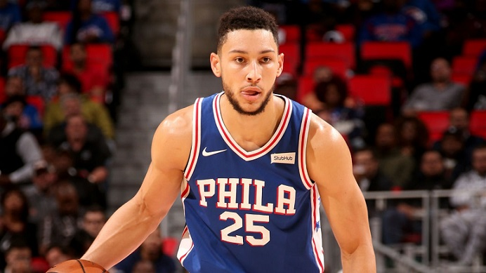

希望來臨
2016-2017賽季
連續兩年因傷無法上場的Joel Embiid終於康復歸隊，雖然於狀元籤選中Ben Simmons依然逃不過受傷的詛咒，但是Joel Embiid給予費城76人的驚艷已經使得球團、球迷的燃起希望，在Joel Embiid出賽31場比賽中，場均能獲得20.2分7.8個籃板2.1次助攻，抄截及阻攻分別場均有0.9次及2.5次的全能表現，而且僅用25.4分鐘，使得球團驚艷。
然而好景不長，Joel Embiid於季中因左膝蓋半月板撕裂，該賽季提前報銷，但由Joel Embiid的帶領下2016-2017賽季費城76人以28勝54敗收場。縱使如此Joel Embiid受傷，但費城76人認為屬於他們的時代即將來臨，畢竟只要等到Joel Embiid、Ben Simmons健康歸隊，球隊前景一片光明。
2017年NBA選秀狀元

Ben Simmons